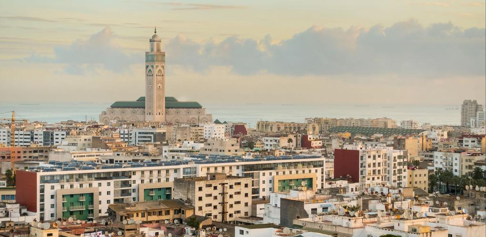
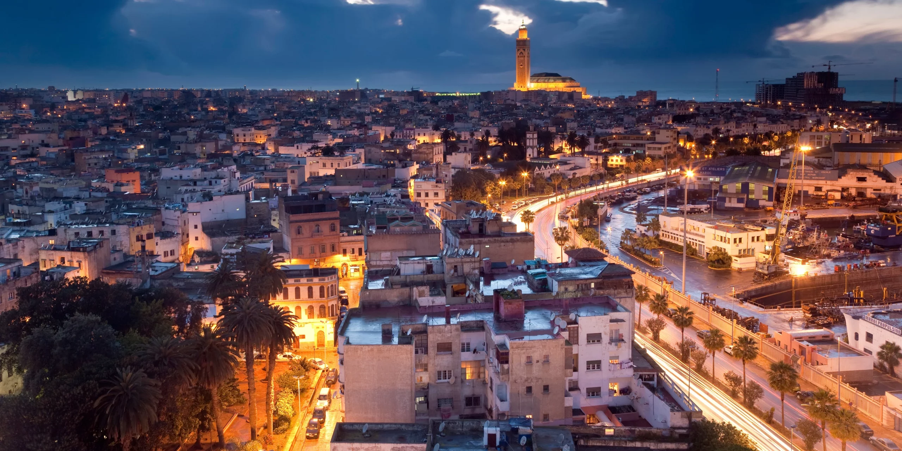
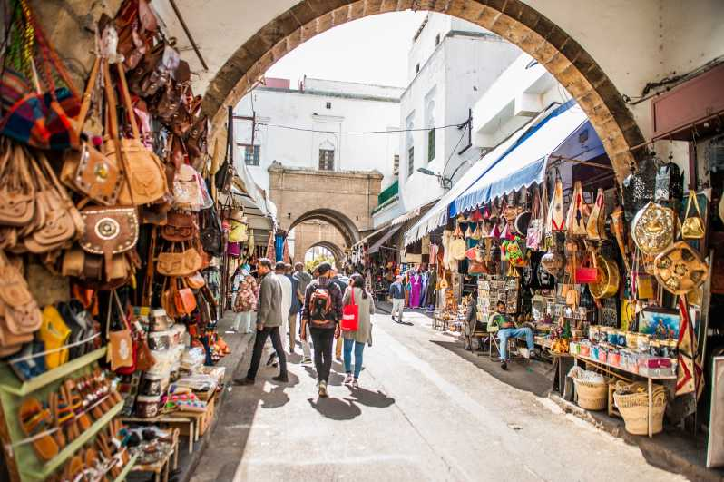
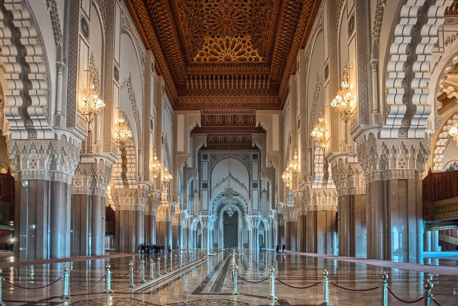
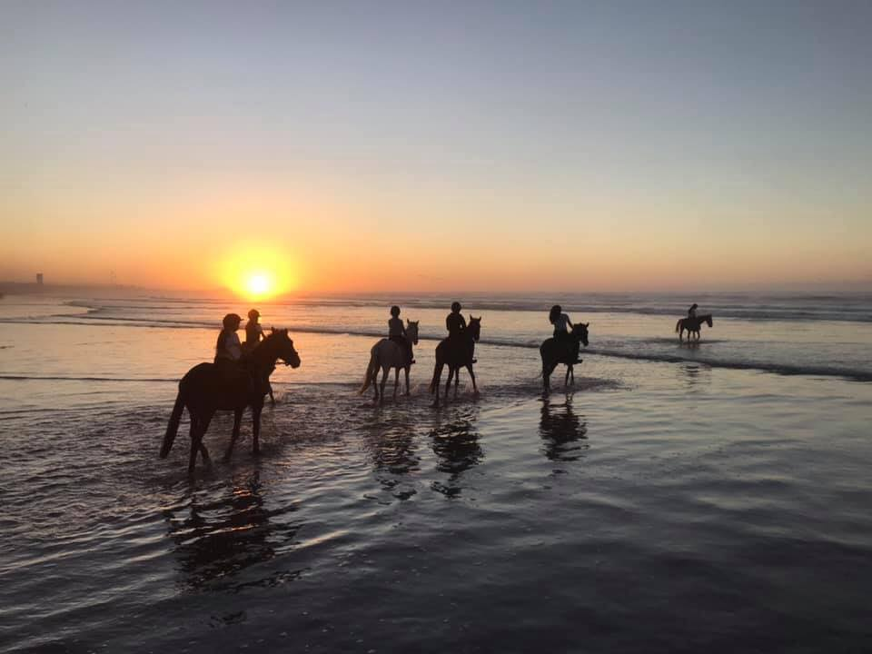
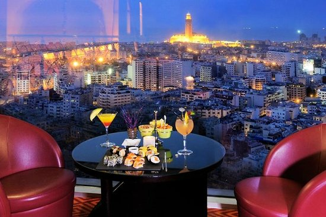

Éclats de Casablanca : La Perle de l'Atlantique
Casablanca, surnommée la perle de l'Atlantique, enchante par sa splendeur envoûtante. Les rues animées
résonnent de l'écho des marchés colorés et des artisans talentueux. La silhouette majestueuse de la mosquée
Hassan II se dresse fièrement au bord de l'océan, capturant la lumière du soleil couchant dans ses minarets
élancés. Les plages dorées étirent leurs bras accueillants le long du littoral, invitant les visiteurs à se
perdre dans la douceur du sable et le murmure des vagues. Chaque coin de la ville raconte une histoire,
mêlant l'héritage riche de son passé à la modernité audacieuse de son présent. Casablanca, une ville où la
beauté se révèle à chaque coin de rue, éblouissant les âmes des voyageurs avec sa grâce intemporelle

Ville Blanche: Casablanca en quelques mots
Casablanca, la ville blanche, vibre au rythme envoûtant de l'Al9lawi. Ses ruelles sinueuses résonnent des notes enjouées de cette danse traditionnelle marocaine. Les habitants, fiers de leur patrimoine, se retrouvent souvent pour célébrer en musique et en mouvement, créant ainsi une ambiance festive et chaleureuse. Entre les façades blanches et les souks animés, l'Al9lawi trouve sa place, faisant vibrer la ville au son de ses pas cadencés et de ses rythmes entraînants.
Monuments
Le Quartier Habous

Les Habous, quartier historique de Casablanca, est un joyau architectural où l'on trouve des ruelles étroites, des souks animés et des bâtiments aux façades blanches et portes ornées. C'est un lieu emblématique où l'on peut découvrir l'artisanat traditionnel marocain et profiter de l'ambiance authentique des cafés et des marchés aux épices.
La Mosquée Hassan II

La Mosquée Hassan II à Casablanca est une œuvre architecturale remarquable, inaugurée en 1993. C'est l'une des plus grandes mosquées au monde, avec un minaret de 210 mètres de haut, offrant une vue imprenable sur la ville. Sa conception marie habilement tradition et modernité, avec des détails architecturaux élégants et l'utilisation de matériaux de qualité. La mosquée peut accueillir jusqu'à 25 000 fidèles à l'intérieur et 80 000 de plus dans sa cour lors des célébrations religieuses. Elle est une attraction touristique majeure, attirant des visiteurs du monde entier pour son architecture magnifique et son importance culturelle et religieuse.
Activites A Faire
Balade A Cheval

Chevaucher le long de la mer offre une expérience sensorielle unique. Imaginez-vous, le bruit apaisant des vagues, la brise marine caressant votre peau, tandis que vous explorez la côte sur le dos d'un cheval. C'est une manière envoûtante de découvrir la beauté naturelle du littoral, une escapade qui nourrit l'âme et éveille les sens.
Restaurant

Découvrez SKIES, le nouveau restaurant lounge du Kenzi Tower Hotel. Une atmosphère chaleureuse et décontractée, des animations live et des DJ résidents pour agrémenter vos sorties. Un lieu unique, deux ambiances distinctes : Au 27ème étage, notre restaurant vous accueille pour une expérience culinaire inédite de 12h à 15 pour le déjeuner et de 19 à 23h pour le diner. Au 28ème étage, de 15h à 1h, notre bar lounge vous attend avec des tapas et des plats succulents. Un mixologiste talentueux sera à votre service pour préparer des cocktails exquis, fusionnant habilement animation et innovation